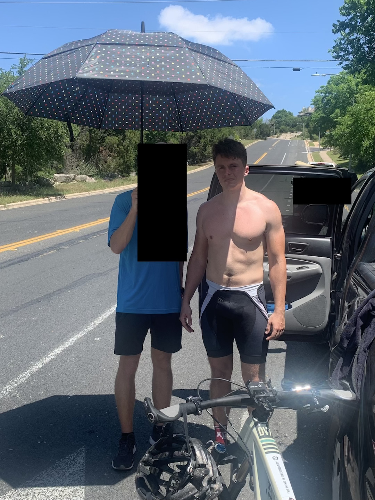
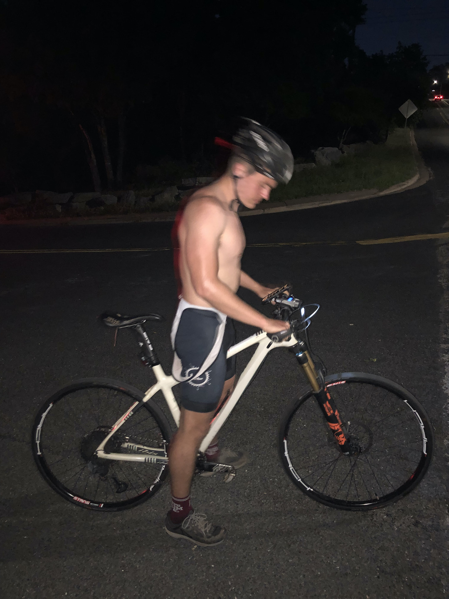

Ride report from my successful Everesting attempt on 15 April 2023.
Everesting II: Defeat by Darkness
Almost everything from Everesting II's Preparation and The Hill sections is the same here. Similar training (minus RFESS), similar sleep, similar gear, same hill.
The biggest difference was the bike used. Instead of using the 32 lb behemoth that is the Ibis Ripley, I used my Ibis DV9, my go-to XC race bike. Couple that with the Schwalbe G-One Speed and I had a much lighter (read: faster) ride.
I started at midnight on Friday night (or Saturday morning, if you want to be technical) in the dark. There were a few stray cars that passed me, but besides them I was completely alone and isolated, passing by dark homes with slumbering residents inside. I began with sets of five climbs, each of them taking nine or so minutes roundtrip. Five was large enough that I made a significant dent in the 100 total I was aiming for and small enough that I wasn't pushing my fatigue too much too early. I took 40 mg of caffeine at 3:30am when I had my first yawn. My shirt was drenched in sweat around lap 15, causing me to ditch it. This was the last time I wore a shirt until I finished in the evening.
The cavalry (in the form of my brother and mother) showed up at 6:00am right as I finished lap 34, giving me a boost of motivation and taking some energy-expending activities (namely nutrition) off my plate to let me focus on riding. Eventually two of Brother's friends showed up to tailgate the bottom of the hill, hang out with their best friend, and cheer me on.
It was somewhere around lap 60 when I realized this was going to be fucking awful. The temperature was slowly rising and the clouds slowly disappearing, making way for a shiny sun that caused delirious thoughts later on. My pace was still on for an 18-hour finish, my original goal, but I knew that would slip away with the heat and as fatigue and drowsiness set in. I continued to eat as my stomach and brain allowed: bananas, peanut butter and jelly or honey sandwiches, Zebra Cakes (yes, those), cookies, and cinnamon rolls were all on Ethan's Everesting Menu in quantities I wouldn't be able to finish.
Around lap 70 or 80 I was down to sets of three climbs, and even that was rough. I had to force myself to at least start the third because I knew shame and fear would carry me to finish it, and in hindsight, I should have kept this strategy and told Brother to enforce it.
Sets of two now. I couldn't make it to 100 and had to do the bare minimum plus one to finish. Brother pulled up the Strava maps and compared contour lines from the bottom and top. I called a friend and held him at phonepoint while he downloaded Google Earth Pro to check the elevation profile. The numbers were different enough that I said fuck it, finished my Strava activity, divided by elevation gain by 84, then took 29032 ft and divided it by the quotient. What I got was a punch in the gut, a kick in the balls, and a slap in the face, all at once and none of them pulled. I had to do 100 laps. The number I thought I needed going in was 94, but I said 100 just to play it safe and hey, 100 is a nice, even, divisible-by-a-whole-buncha-other-numbers number that it made sense to just call it 100 even. Who wants to do 94 laps when you can do 100? That's not a rhetorical question. The Ethan who just finished 84 laps and is fucking dying in the 90 °F heat with direct sunlight on his back during the entire climb is the person who wants to do 94 laps instead of 100.
Fuck. The logical part knew I had to do it. I was this close and was not about to quit. The emotional part also knew it but was still going to throw a bitch fit.
Delirium set in around this time. Whenever I'm in bed and on the cusp of actually falling asleep I have weird, illogical, nonsensical thoughts that I immediately recognize as such and then (immediately recognize)2 that I'm about to fall asleep. This was happening here. In one instance, the sun was seemingly perched about a mile above the horizon and for a a few seconds I believed it was like the Eye of Sauron, punishing me for voluntarily competing in this god forsaken challenge. A few times I lost sense of where I was and what I was doing.
The sun had set and my lights had been put back on. I did sets of one until my final two, where I did a quick U-turn at the bottom and start back up for my final time barring any mathematical mistakes or geographical shifts that were to be discovered in the next 10 minutes of climbing. I got to the top where Brother was FaceTiming the group chat, rudely told him to turn that shit off because it was bright, loaded up my bike, changed clothes, and got in the car. There was no energy for celebrating, no happiness for finishing, no thankfulness for Brother doing an amazing, attentive, energetic, enthusiastic job at crewing the effort for the last 15 hours. I reeked of misery and loathing and suffering and exhaustion.
But it was finished. Just under 21 hours after starting I conquered what I had been training for for the past two years.
Average speed down the hill was probably just above 40 mph. Top speed according to Strava was 47.3 mph, which I actually believe. I was going pretty fast. Definitely hospital-level speed if had I crashed.
I never stood up during any of the climbs (except to give my ass a break). Downhills were taken in a tuck position to minimize rest so I could hit the wall faster and suffer longer.
We met three ultramarathoners, all of whom had run Leadville before it sold out. We had a short anti-Leadville rant together and they cheered me on whenever I saw them.
Lots of people asked what I was doing when they either a) saw the three adults camped out in lawn chairs at the bottom of the hill on a hot day, or b) saw me riding up and down multiple times. Some people were astounded at the number of repeats I had to do, others just said good luck, and one simply asked "Everesting?" and went on his way after we answered in the affirmative.
Some driver saw me unashamedly peeing on the side of the road and apparently gave a disgusted look.
Riding down the hill when a car was behind me (and sometimes slowly catching up) felt like a boss fight in the a shooter video game where the players are running and shooting as the monster chases them.
I never changed bottoms (just wore my only Jakroo bib), wore only that one shirt during the morning, and changed socks once. Sunscreen was applied as we remembered. No sunglasses. No hat. Umbrellas supplemented the shade provided by the truck and trees.
Music was mainly Modern Life is War, Knocked Loose, Life Long Tragedy, Crafter, Hatebreed, Taylor Swift, and Drake. I wish I remembered Harm's Way.
A standard road bike may actually be more difficult because of the gearing. A 1x mountain bike with slicks is my preferred bicycle, both because I don't have to buy one and because of the gearing.
I have to do this again because my effort, despite completing it, doesn't satisfy the official Everesting rules and my ego requires me to be on the leaderboards and rock the finisher's kit.
Some type of support crew is highly recommend for both energy savings and motivation. Find someone you can be short with and a dick to and then reward them lavishly (or ask for the support to be a Christmas present like I did). Come up with a plan beforehand and be strict, but not rigid, with its implementation during the effort. The rider's mind will beg and plead for it to change, but the supporter's mind must remain rational and firm as needed.